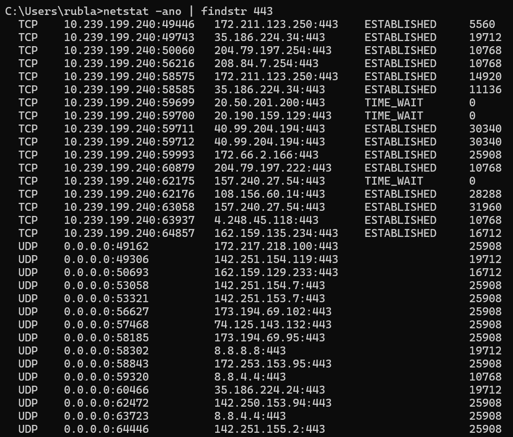
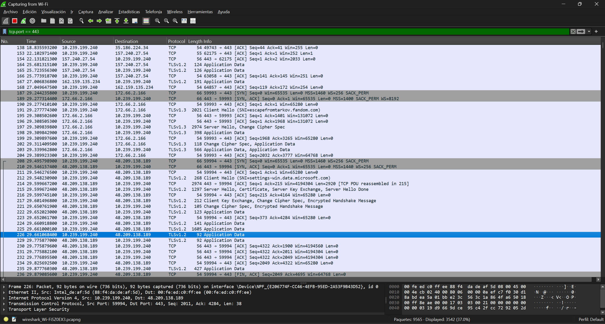
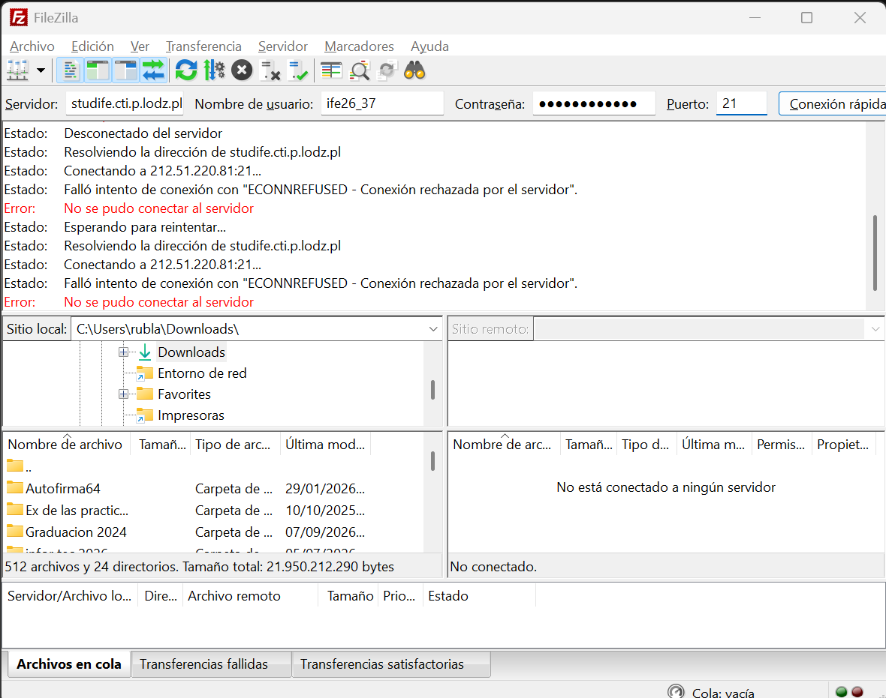
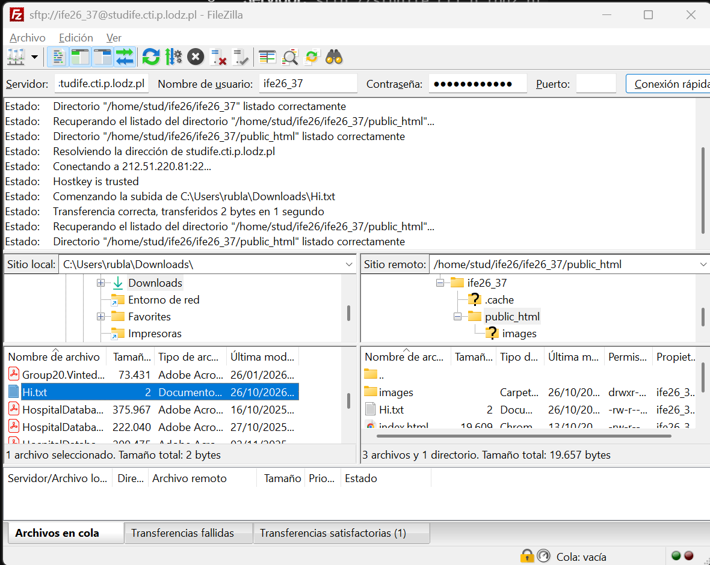
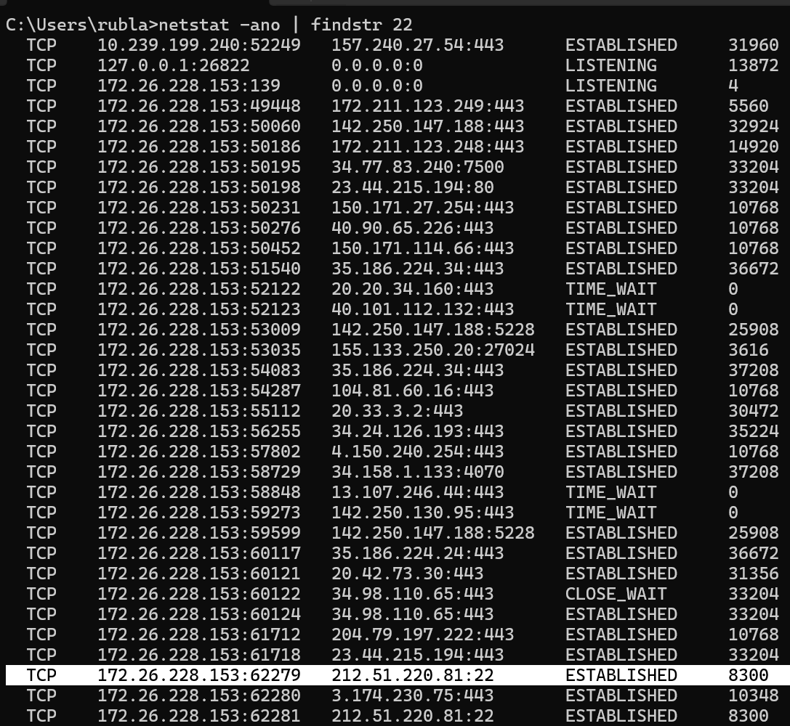
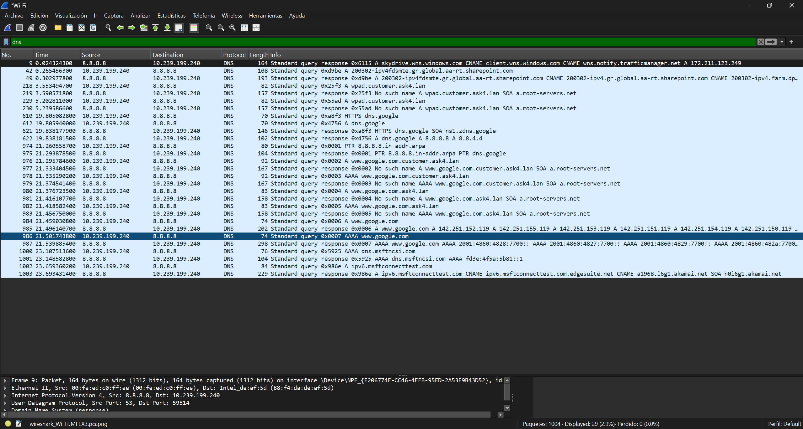

Assignment - Network and Transport Layers
Theoretical part
1.1. Network and Transport Layer Protocols
1.1.1. TCP protocol
TCP is a set of rules for sending data over the internet. It acts like a careful delivery service. It makes sure every piece of data arrives safely. If a piece gets lost, TCP asks to send it again. It is very reliable but a bit slow.
1.1.2. UDP protocol
UDP is another way to send data. It is much faster than TCP. However, it does not check if the data arrives perfectly. If a piece gets lost, it just ignores it. It is great for live videos or online gaming where speed is the most important thing.
1.1.3. TCP protocol parameters
These are the specific settings TCP uses to manage the data. They include the sender's address and the receiver's address. They also include special numbers to put the data back in the correct order. This helps prevent traffic jams on the network.
1.1.4. UDP protocol parameters
UDP settings are much simpler. Because UDP does not track missing data, it uses fewer parameters. It mostly just includes where the data is coming from, where it is going, and the size of the message.
1.1.5. TCP connection
A TCP connection is a secure, virtual link between two computers. Before they share any real information, they must agree to connect. They keep this link open until all the data is successfully shared.
1.1.6. Three-way handshake
This is the standard process used to establish a TCP connection between two devices. First, the sending computer requests to open a connection. Second, the receiving computer acknowledges this request and indicates it is also ready. Finally, the first computer confirms it has received the acknowledgment. After these three steps, the data transfer can begin.
1.1.7. Connection establishment
This is the full process of preparing computers to talk to each other. It uses the three-way handshake we just mentioned. Once this setup is complete, the computers trust each other and data can flow safely.
1.1.8. Connection release
This is how computers end the conversation. When they finish sending all the files, they close the connection. This process frees up computer memory so they can connect with other devices later.
1.1.9. Ports
Ports are like numbered doors on a computer. A computer can do many things at once, like downloading a file and showing a website. Ports help the computer know which door the data should enter. For example, websites usually enter through door number 80 or 443.
2. Practical part
2.1. Analysis of Network and Transport Layers
2.1.1. Enter the www.google.com webpage using your preferred browser. Use netstat and Wireshark to identify ports which are used for data transmission (local and remote port numbers). Finish the connection (close the browser) and check the local port status.
When opening www.google.com in a web browser, an HTTPS connection is established using the TCP protocol. The remote server listens on port 443. Netstat shows active connections in the ESTABLISHED state during data transfer, which then transition to TIME_WAIT status after the browser is closed to safely release the connection. Wireshark captures confirm the TCP traffic and TLS handshake over remote port 443.


2.1.2. Copy a file from your local host to the studife.it.p.lodz.pl server using the FTP protocol. Use netstat and Wireshark to identify ports which are used for data transmission (local and remote port numbers). Finish the connection and check the local port status.
Attempting to connect to studife.cti.p.lodz.pl using the standard FTP protocol on port 21 results in an ECONNREFUSED error (Connection refused by server). Running netstat confirms that no TCP connection is established on local or remote port 21. This behavior confirms that the server does not run FTP service on port 21 and requires secure protocols such as SFTP.

2.1.3. Copy a file from your local host to the studife.it.p.lodz.pl server using the SCP or SFTP protocol. Use netstat and Wireshark to identify ports which are used for data transmission (local and remote port numbers). Finish the connection and check the local port status.
Transferring the file Hi.txt to the public_html directory on the server was performed using the SFTP protocol over SSH on remote TCP port 22 (212.51.220.81).


2.1.4. Use Wireshark to check which protocol and port are used in the transport layer by the DNS protocol.
By checking the network capture in Wireshark, we can see that the DNS protocol uses UDP at the transport layer. The packet details confirm that all DNS requests and answers pass through port 53 on the server.
